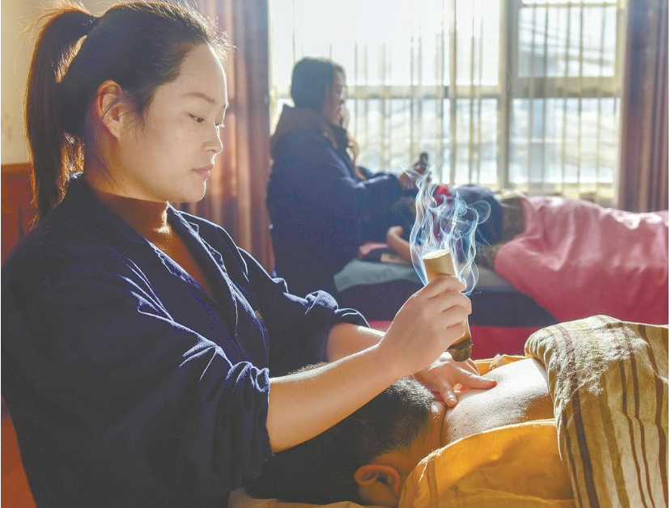

-

“破壁”千年纹样 焕新非遗传承
踏遍山区收集传统纹样，攻克手持纹样扫描仪等难题，生成算法开发建设纹样库，创新色釉料及制陶工艺，提升产品附加值……近日，在第六届中国青年志愿服务公益创业赛全国赛上，武汉理工大学“非遗所思”志愿服务队的《武陵窑开，纹遍九州——民族纹样库赋能武陵山区制陶产业》项目荣获银奖。
2023-12-18 湖北日报 -

新匠人飞针走线 老手艺因趣生情
王炜佳，国家级非遗项目汉绣市级代表性传承人，工艺美术师，武汉汉绣艺术有限公司总经理。外公任本荣是汉绣国家级非遗代表性传承人，母亲任炜是汉绣省级传承人。2015年起至今，王炜佳担任武汉汉绣艺术研究院与武汉市第一聋哑学校联合开办的汉绣班技法老师，培养汉绣技术人才。
2023-12-16 湖北日报 -
非遗民俗文化激活古村经济
12月6日，房县军店镇民俗文化表演队穿行下店子古村落，秧歌、船灯等表演热闹非凡（如图），街上人头攒动，争相观看非遗民俗节目。下店子村落始建于唐朝，鼎盛于明清，已有1300多年历史，自古以来是通往川陕的重要驿站。
2023-12-15 十堰日报 -
罗田吊锅为啥不能“论斤卖”？
熊熊蔸子火，浓浓吊锅情。地道正宗的罗田吊锅，其味道堪称一绝，其名气也盛极一时。时隔多年，声名远扬的罗田吊锅却依然停留在“小打小闹”的粗放型经营阶段。“吊锅流行‘论锅卖’很多年了，这个传统的销售方式好难改变。”12月5日，罗田胜利吊锅城董事长吴美莲告诉记者。
2023-12-14 黄冈日报 -

蕲春非遗赋能就业增收
近年来，蕲春县深挖李时珍和本草纲目等优秀中医药文化，推广健康养生理念，推动蕲春艾灸疗法入选国家非遗目录。蕲春艾灸师是蕲春艾灸疗法的活态传承，带动就业创业30多万人。
2023-12-13 黄冈日报 -
台前绽放山茶花俯身培土促新芽
12月7日，原创青春版阳新采茶戏《九瓣莲》在武汉京韵大舞台首演，十七八岁的少年演员们登上舞台。唱腔正统，剧情紧凑，营造全剧氛围的音乐富于变化，舞台光效追随演员，有传统与现代结合之美，服饰设计则采用了国家级非物质文化遗产阳新布贴，演员们一招一式尽显功底，灵气逼人。
2023-12-11 湖北日报
Copyright © 2023遗路生花小组 All Rights Reserved.
联系我们
武汉大学新闻与传播学院
邮政编码 430072
电话 027-68754235C